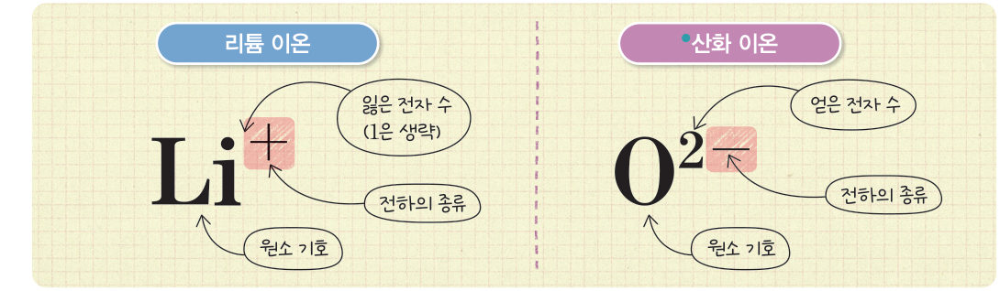
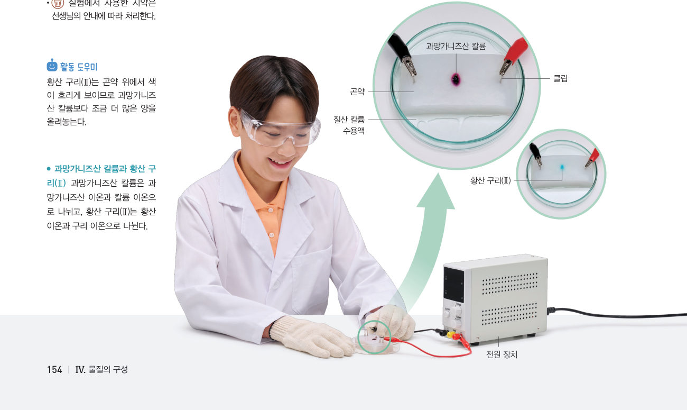

“어? 나 끌려가고 있어.” “난 너랑 반대로 가는 것 같아.” 전원을 연결했을 때 이온이 이동하는 까닭은 무엇일까? 원자에서 전자를 빼고 더해 이온을 만들고, 가상 곤약 실험으로 색깔 이온의 이동을 관찰해 보자.
🎯 이 단원을 배우면 — 이온이 전하를 띠는 과정을 알고 화학식으로 표현하며, 이온이 전하를 띠고 있음을 설명할 수 있다.
교과서이온은 어떻게 전하를 띨까? 152~153쪽
원자에는 (+)전하를 띠는 양성자와 (-)전하를 띠는 전자가 있으며, 그 수가 같으므로 원자는 전기적으로 중성이다. 원자는 전자를 잃기도 하고 전자를 얻기도 한다. 원자가 전자를 잃으면 (+)전하를 띠는 양이온이 되고, 전자를 얻으면 (-)전하를 띠는 음이온이 된다.
이온은 ●원소 기호를 사용하여 나타낼 수 있다. 원소 기호의 오른쪽 위에 이온이 띠고 있는 전하의 종류와 잃거나 얻은 전자 수를 함께 나타내는데, 잃거나 얻은 전자가 한 개일 때는 1을 생략한다.

그림 4-17이온의 표시와 이름 — 리튬 이온 Li⁺, 산화 이온 O²⁻
●이온 이름을 부르는 규칙 양이온은 주로 원소 이름 뒤에 ‘이온’을 붙이고, 음이온은 ‘소’로 끝날 경우 ‘소’를 떼고 ‘~화 이온’을 붙인다(염소 → 염화 이온). ●여러 가지 이온 암모늄 이온 NH₄⁺, 탄산 이온 CO₃²⁻, 질산 이온 NO₃⁻, 수산화 이온 OH⁻
이온 만들기전자를 잃고 얻어 보자
양성자 / 전자-
입자-
화학식-
해 보기 · 모형 개발 및 이용하기이온 모형을 보고 화학식으로 표현하기 153쪽
1이온 형성 과정에서 원자가 잃거나 얻은 전자 수를 확인하고, 각 이온을 화학식으로 표현해 보자. (위첨자는 그냥 이어 써요: Mg²⁺ → Mg2+)
이온
양성자 / 전자
전자를
화학식
마그네슘 이온
12 / 10
나트륨 이온
11 / 10
염화 이온
17 / 18
플루오린화 이온
9 / 10
탐구 · 과학적 증거에 기반하여 주장하기전기력을 이용한 실험으로 이온의 이동 관찰하기 154~155쪽
이온으로 이루어진 물질이 녹아 있는 용액에 전원을 연결하면 ●전기력을 받아 양이온은 (-)극으로 이동하고, 음이온은 (+)극으로 이동한다.
두께 2 cm 정도 되는 곤약의 가운데에 작은 홈을 내고 페트리 접시 위에 올려놓는다.
질산 칼륨 수용액을 부어 곤약을 충분히 적신다.
곤약 양쪽에 클립을 꽂고 ●과망가니즈산 칼륨 알갱이를 가운데 홈에 올려놓는다.
관찰 전원 장치를 약 20 V로 맞추고 곤약에서 나타나는 변화를 관찰한다.
황산 구리(Ⅱ)로 과정 1~4를 반복한다.

154쪽곤약 · 클립 · 전원 장치
⚠️ 감전의 위험이 있으므로 전선을 맨손으로 만지지 않는다. 사용한 시약은 선생님의 안내에 따라 처리한다.
●과망가니즈산 칼륨과 황산 구리(Ⅱ) 과망가니즈산 칼륨은 과망가니즈산 이온(보라색)과 칼륨 이온으로, 황산 구리(Ⅱ)는 황산 이온과 구리 이온(푸른색)으로 나뉜다. ●전기력 전하를 띤 입자에 작용하는 힘
가상 곤약 실험색깔 이온이 어디로 갈까?
1과망가니즈산 칼륨의 보라색은 쪽으로, 황산 구리(Ⅱ)의 푸른색은 쪽으로 이동한다. 따라서 보라색을 띤 이온은 를, 푸른색을 띤 이온은 를 띤다.